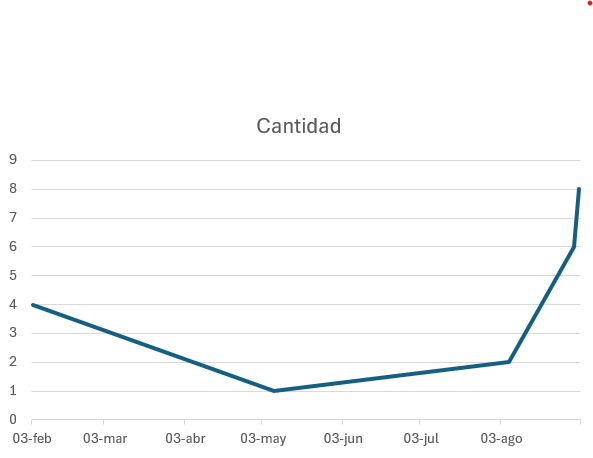
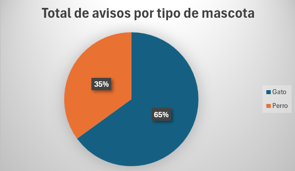
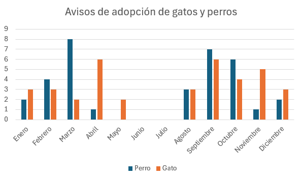

Estadísticas de Avisos de Adopción
Visualización de la información mediante gráficos
Cantidad de avisos por día

Total de avisos por tipo de mascota

Cantidad de avisos por mes (gatos vs perros)

Volver a la portada